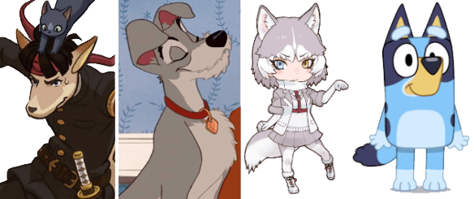
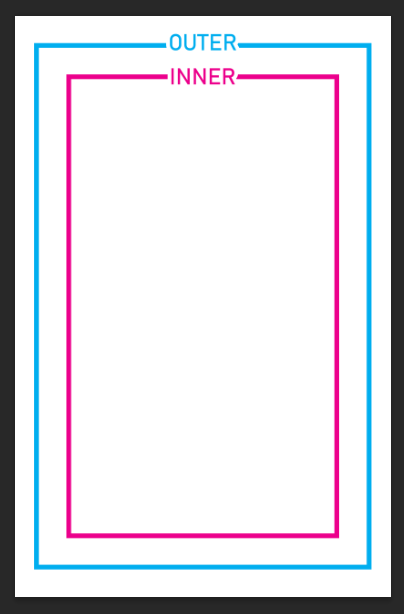

Questions
What is anthro/feral/kemonomimi?
Anthro is the type of furry design that's more human-like where the characters stand on two legs and wear human clothing. The DGS April Fools designs are examples of anthro dogpeople. Feral is basically the same as real animals where the characters stand on four legs and look like regular dogs. Kemonomimi is just a human with animal ears and other animal characteristics such as a tail. All are acceptable for this anthology. We'll try to include at least a few of each, though there won't be any strict balancing of styles.

Anthro / Feral / Kemonomimi / IDK what Bluey is but she counts for this
Can I include other animals?
Sure, but please remember that it's a dogboy zine and not a general furry zine; each piece needs to focus on dogs first and foremost!
Who can apply?
Anyone over the age of 15 can apply.
What is the compensation?
Since it's PWYW for charity, there is none. Anyone is welcome to print out as many copies of the anthology as they want for free distribution only. Making a profit from selling the book is strictly prohibited. You can use your own art for whatever you want after the one month donation period is over.
How much will it cost to print and how do I set it up?
At most, it will use 11 double-sided black-and-white pages. The cost depends on where you print it, e.g. if you're a student in a university, printing there will generally be cheaper than going to a copy center like Staples. Please check your school/workplace/library/copy center/house to see printing costs.
The PDF will already be formatted for booklet printing so all you need to do is print it out, fold, and staple it. See
here for how to staple a booklet with a regular short stapler. The PDF in regular format will also be supplied.
How will updates be communicated?
Email is required; all updates will be sent through there. There will also be an optional Discord server which participants can join if they want to (if you join it, I won't send any email updates).
Check-in schedule to be decided later. You must let me know in advance if you need extra time past the final deadline or if you're unable to participate in the end.
How many participants will there be?
It's hard to tell at the moment. The absolute page limit is 44, but 4 of those pages are used for the cover. Since each person can essentially get up to 2 pages, the participant count for the book itself could range anywhere from 20~ish to 35~ish.
Can I apply for multiple roles?
Yes. If you apply for multiple, you might get selected for up to two roles. It'll be worded as "___ and/or ___" so you can choose to do both roles or just one.
How are characters/pitches assigned?
When you apply, you can write a list of the top 5 characters you want to draw as well as any concepts you have in mind. Character assignments will be sent out during results. Please create a piece that has the assigned character in some way (no pitch/concept required). The assigned character doesn't need to be the focus though (e.g. it could be a group shot too, as long as it contains that character in some way so there's a decent variety).
Are there any guest artists?
Some people I vaguely know have been invited in advance, but there isn't any distinction between them and applying artists (the character and role will be decided later with everyone else).
What is monochrome and how does it differ from grayscale?
Monochrome is pure black/white and can include the usage of screentones or other shading techniques like hatching. Grayscale can include the use of tones outside of black/white (i.e. grays).
This anthology is monochrome. The reason for this is that it simply looks better when printed with most home printers. Using screentone/hatching for 'grays' instead of actual grays is also more efficient when it comes to ink and ink is expensive!!!. I can convert your art from grayscale to monochrome with screentones if needed (and if it's absolutely necessary for your style, then greyscale is fine too).
What else should I know about the formatting?
You can't print to the edge, so it's best to draw thinking of that consciously
It's recommended to not use too much pure black fill since it can show up strongly on the backside of thin paper. Please note that all artwork will have to be drawn with a white border in mind as most casual printers are unable to print to the edge of a page. You can basically treat it like a frame. More detailed formatting information will be provided later, including a template like this:

To make things easier, the art only needs to be drawn in the proportion of half-letter sizethe zine will still be formatted for A4 printing as well, though most people who'll download it are probably american so i'm prioritizing letter size. the art won't be cropped.. When you draw, you can safely go to border 'INNER', but don't go past border 'OUTER'.
 GS is a Great Ace Attorney zine focused on portraying the cast as dogboys and doggirls, whether anthro, feral, or kemonomimi. It is a pay-what-you-want charity anthology designed for printing as a monochrome A5/half-letter size booklet.
GS is a Great Ace Attorney zine focused on portraying the cast as dogboys and doggirls, whether anthro, feral, or kemonomimi. It is a pay-what-you-want charity anthology designed for printing as a monochrome A5/half-letter size booklet.